Monday, November 9 · 50-minute theory class
Lecture 06 · Forced vibration
Why repeated loading amplifies motion, how the model is derived, and how Lab 5 tests it.
1. Forced vibration | Lab 5
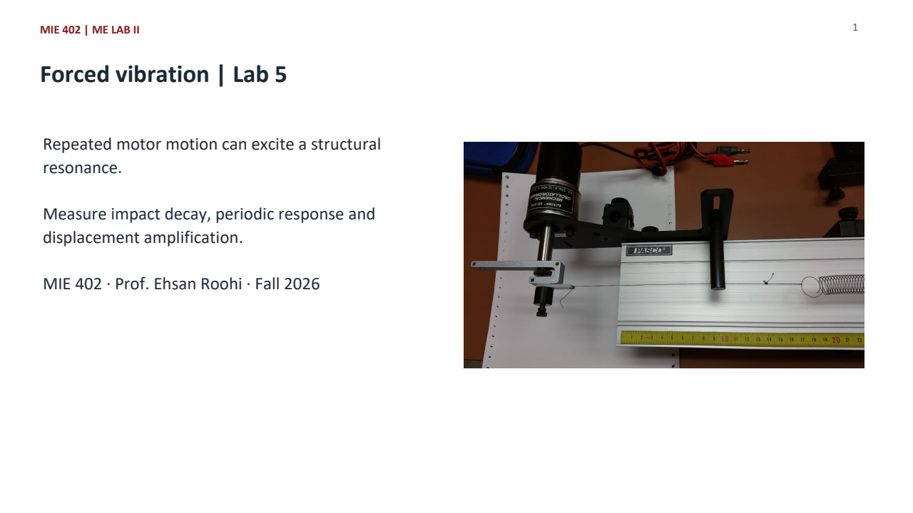
Explanation
Repeated motor motion can excite a structural resonance.
Measure impact decay, periodic response and displacement amplification.
MIE 402 · Prof. Ehsan Roohi · Fall 2026
50-minute lesson. Theory Nov 9; lab sections Nov 17–20. Begin with the rotating motor and ask what happens when its speed approaches a structural frequency. Photo: prior-course Lab 5 apparatus.
2. Engineering applications
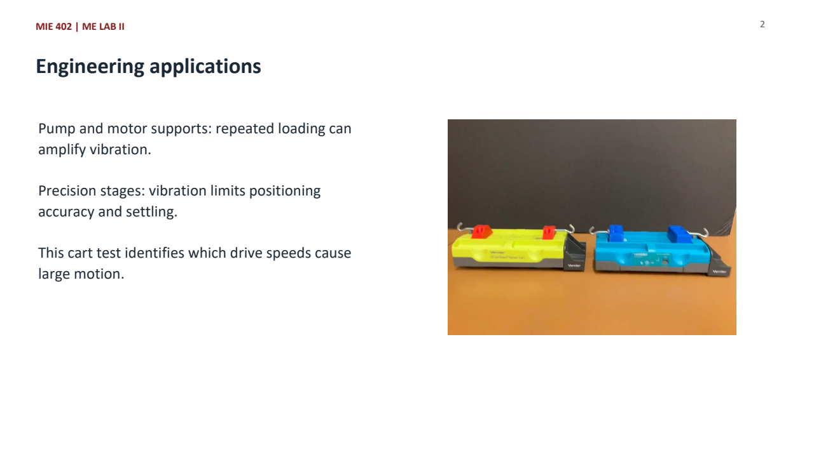
Explanation
Pump and motor supports: repeated loading can amplify vibration.
Precision stages: vibration limits positioning accuracy and settling.
This cart test identifies which drive speeds cause large motion.
0–3 min. The laboratory is a linear vibration model, not a full vehicle suspension. Discuss fatigue and motion quality without claiming the cart duplicates every industrial load path. Photo: course apparatus.
3. What the apparatus measures
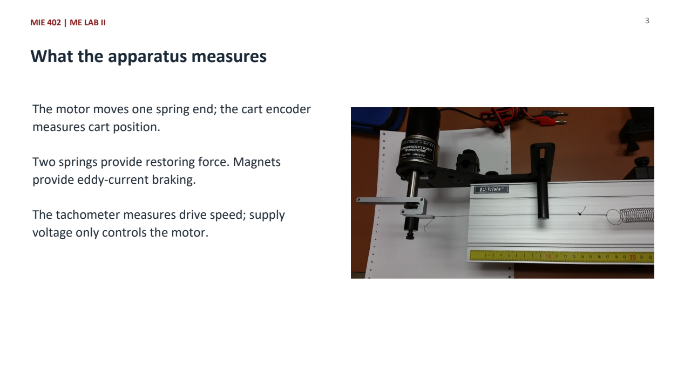
Explanation
The motor moves one spring end; the cart encoder measures cart position.
Two springs provide restoring force. Magnets provide eddy-current braking.
The tachometer measures drive speed; supply voltage only controls the motor.
3–5 min. Point out the motor, linkage, driven spring, track and cart. An encoder infers displacement from rolling wheel rotation; slipping invalidates that measurement. Source: LAB5_MIE402, tasks 3–4.
4. Coordinates and measured parameters
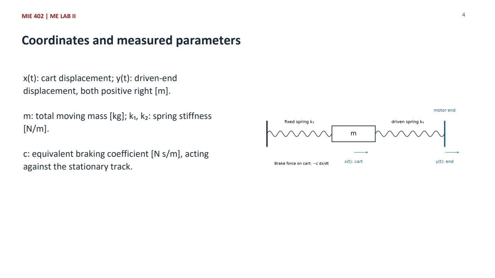
Explanation
x(t): cart displacement; y(t): driven-end displacement, both positive right [m].
m: total moving mass [kg]; k₁, k₂: spring stiffness [N/m].
c: equivalent braking coefficient [N s/m], acting against the stationary track.
5–7 min. Both coordinates are changes from static equilibrium. The fixed outer spring end stays still. The right end is driven. The model assumes taut linear springs and a viscous approximation to losses.
5. Spring and mass measurements
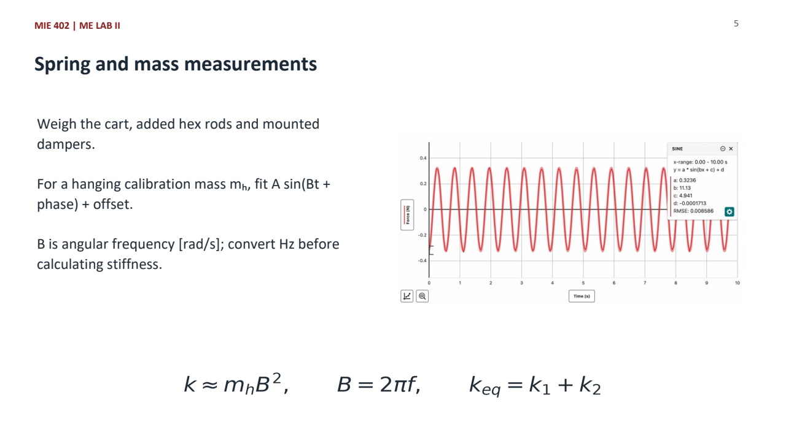
Explanation
Weigh the cart, added hex rods and mounted dampers.
For a hanging calibration mass mₕ, fit A sin(Bt + phase) + offset.
B is angular frequency [rad/s]; convert Hz before calculating stiffness.
7–9 min. This uses light damping and a negligible spring-mass correction. If a reliable decay rate alpha is measured, k=m_h(B²+alpha²). Reuse the same labeled springs’ Lab 4 calibrations. Do not insert nominal stiffness as a measurement.
6. Vernier Graphical Analysis
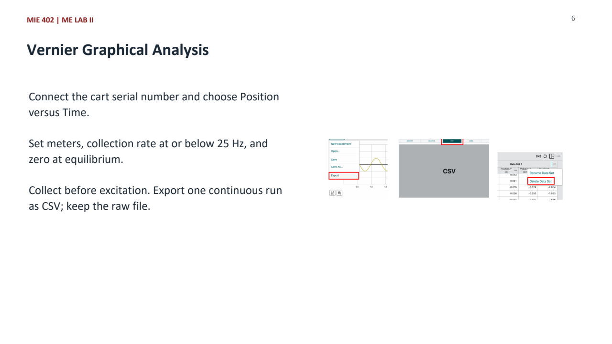
Explanation
Connect the cart serial number and choose Position versus Time.
Set meters, collection rate at or below 25 Hz, and zero at equilibrium.
Collect before excitation. Export one continuous run as CSV; keep the raw file.
9–11 min. The image is from the prior course handout; menu appearance may vary by installed version. Use Sensor Data Collection, connect, Done, choose collection settings and sensor zero. For spring calibration connect the force sensor, not the cart position channel.
7. An impulse changes velocity
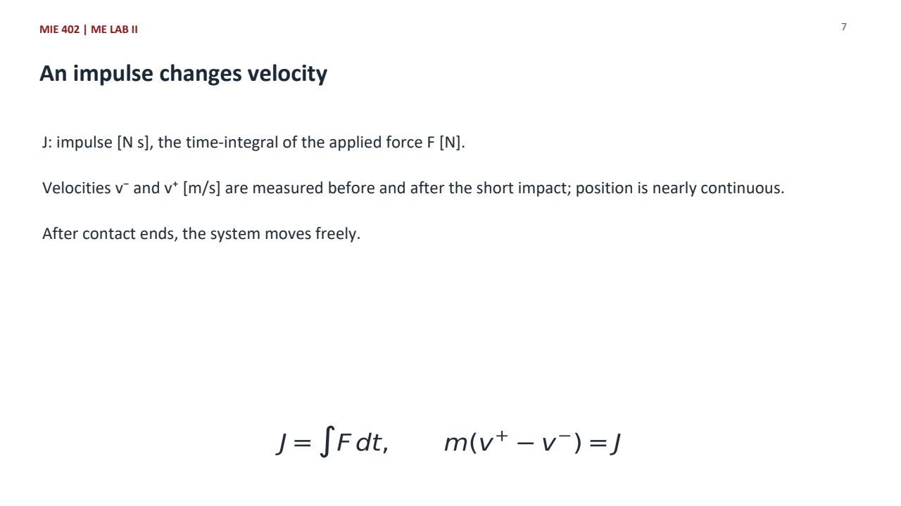
Explanation
J: impulse [N s], the time-integral of the applied force F [N].
Velocities v⁻ and v⁺ [m/s] are measured before and after the short impact; position is nearly continuous.
After contact ends, the system moves freely.
11–13 min. This follows by integrating m xddot=F-c xdot-k_eq x over a sufficiently short impact. The spring and damping impulses are small over that interval. The lab does not measure J unless it records contact force. Use a gentle short tap, never a large collision.
8. Impulse response follows the free-decay model
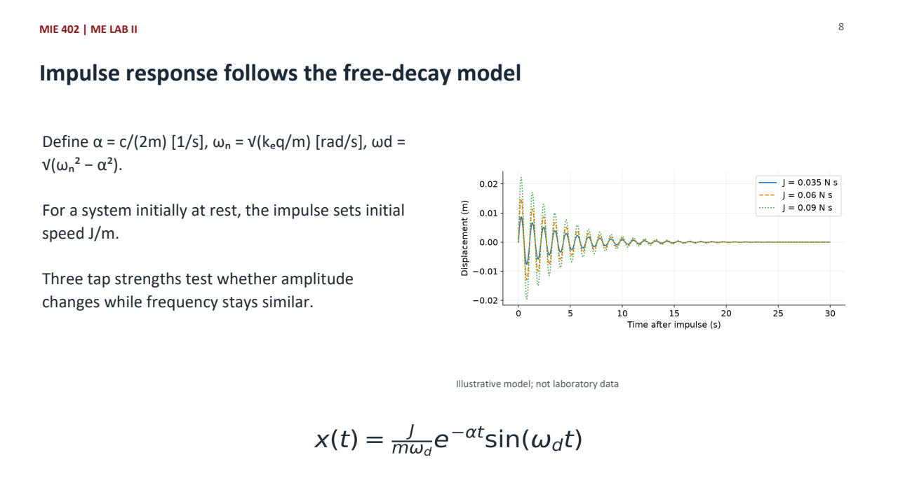
Explanation
Define α = c/(2m) [1/s], ωₙ = √(kₑq/m) [rad/s], ωd = √(ωₙ² − α²).
For a system initially at rest, the impulse sets initial speed J/m.
Three tap strengths test whether amplitude changes while frequency stays similar.
13–15 min. Derive by applying x(0)=0 and xdot(0+)=J/m to exp(-alpha t)(A cos wd t+B sin wd t). The fitted laboratory interval may start later and uses both sine/cosine terms. Source: prior theory notes and Newton’s law.
9. What an impulse spectrum tells us
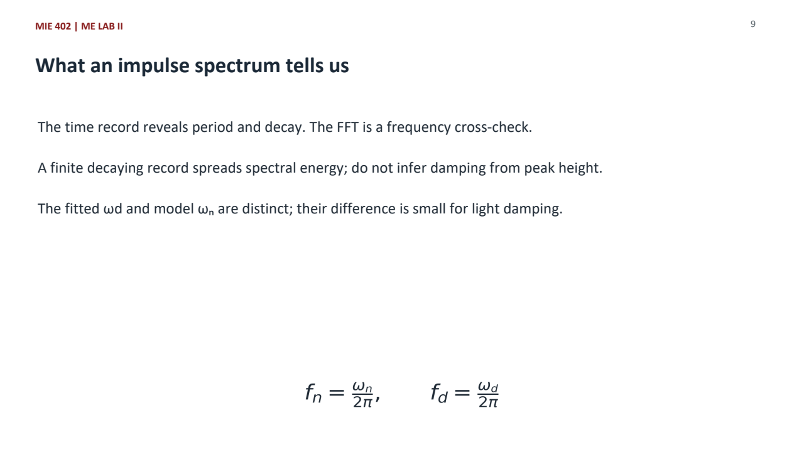
Explanation
The time record reveals period and decay. The FFT is a frequency cross-check.
A finite decaying record spreads spectral energy; do not infer damping from peak height.
The fitted ωd and model ωₙ are distinct; their difference is small for light damping.
15–17 min. Define fn and fd in Hz. Finite-window FFT peaks need not exactly equal fd or fn; damping, record length and bin spacing matter. Use consistent windows and show three spectra together. No claim of exactly equal FFT and time-fit frequency is needed.
10. The driven spring produces the forcing
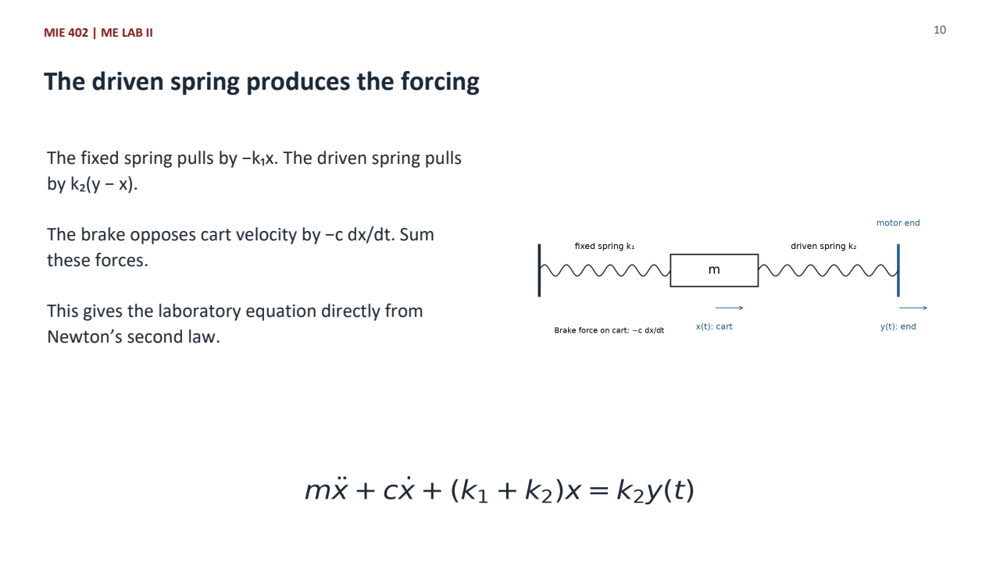
Explanation
The fixed spring pulls by −k₁x. The driven spring pulls by k₂(y − x).
The brake opposes cart velocity by −c dx/dt. Sum these forces.
This gives the laboratory equation directly from Newton’s second law.
17–20 min. Work through m xddot=-k1 x+k2(y-x)-c xdot on the board before collecting terms. The effective force amplitude is k2 Y only when the spring is linear and driven-end motion is approximately sinusoidal. The damper is against the track, not between the moving end and cart.
11. Steady-state response from the equation
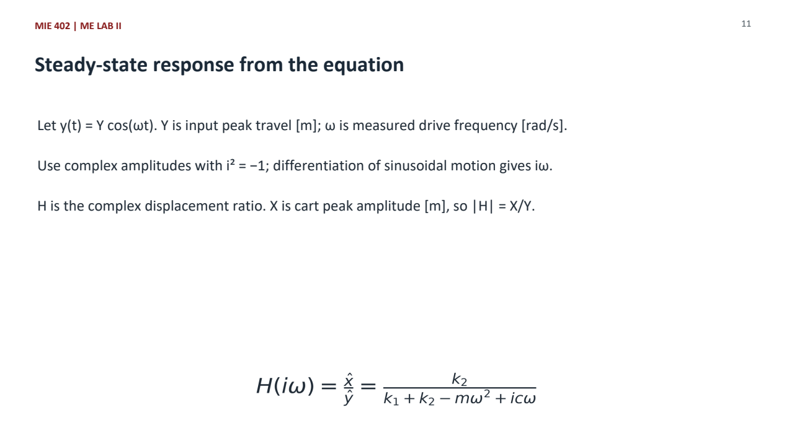
Explanation
Let y(t) = Y cos(ωt). Y is input peak travel [m]; ω is measured drive frequency [rad/s].
Use complex amplitudes with i² = −1; differentiation of sinusoidal motion gives iω.
H is the complex displacement ratio. X is cart peak amplitude [m], so |H| = X/Y.
20–22 min. Starting from the previous equation, substitute x=Re{xhat exp(iωt)} and y=Re{yhat exp(iωt)}; divide by yhat. i²=-1. This explicitly connects the differential equation to the next amplitude formula. X is the cart peak amplitude, not its peak-to-peak travel.
12. Amplitude and phase of the response
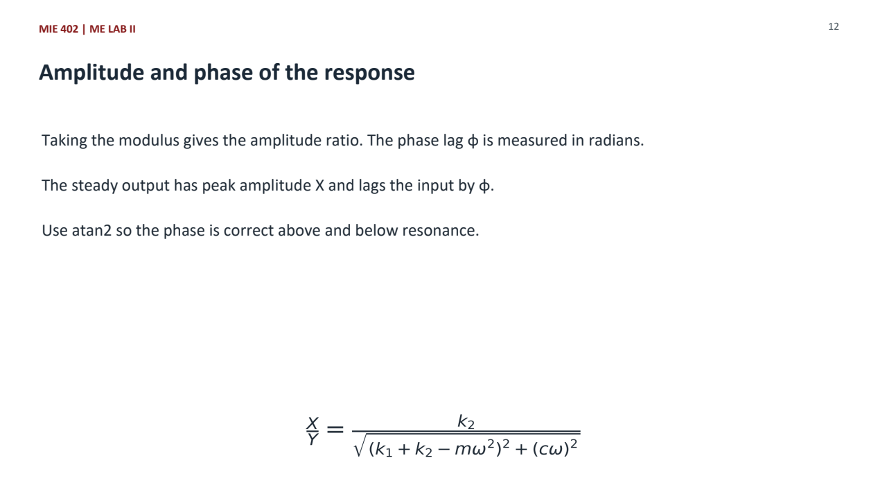
Explanation
Taking the modulus gives the amplitude ratio. The phase lag φ is measured in radians.
The steady output has peak amplitude X and lags the input by φ.
Use atan2 so the phase is correct above and below resonance.
22–24 min. φ=atan2(cω,k1+k2-mω²), in radians. Explain real and imaginary components as perpendicular sides of a complex-plane triangle. Experimental phase is not required because the usual record has no synchronized input measurement. The code does not mislabel an output-only phase as input/output lag.
13. Low-frequency and resonance limits
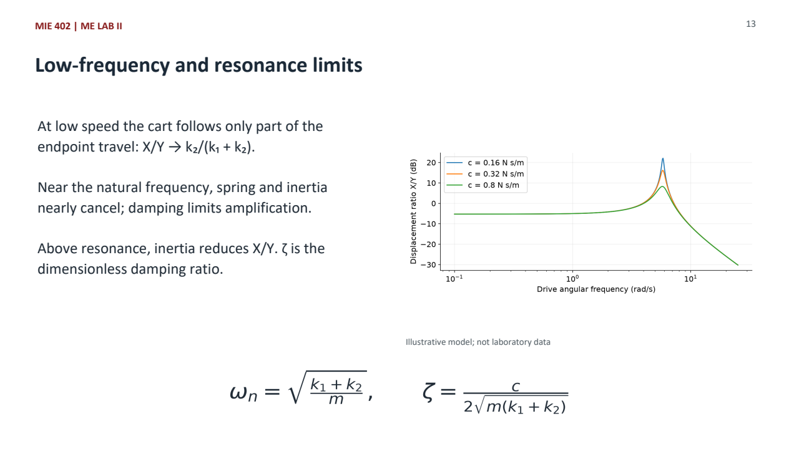
Explanation
At low speed the cart follows only part of the endpoint travel: X/Y → k₂/(k₁ + k₂).
Near the natural frequency, spring and inertia nearly cancel; damping limits amplification.
Above resonance, inertia reduces X/Y. ζ is the dimensionless damping ratio.
24–27 min. The amplitude maximum is at ωr=ωn sqrt(1-2ζ²) when ζ<1/sqrt(2), so it is not exactly ωn with damping. The ratio is not generally unity at zero frequency. Do not ask students to dwell at the peak; gather safe points on both sides.
14. The full response includes startup motion
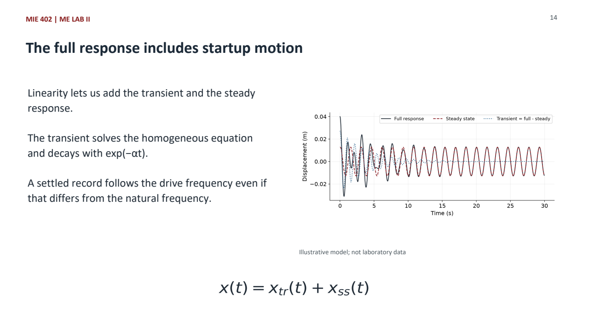
Explanation
Linearity lets us add the transient and the steady response.
The transient solves the homogeneous equation and decays with exp(−αt).
A settled record follows the drive frequency even if that differs from the natural frequency.
27–29 min. The steady response solves the forced equation. Their sum must satisfy initial position and velocity; this determines the transient coefficients. Ask students to identify which curve would disappear after several damping time constants. The motor must be stable for a single-frequency fit to be meaningful.
15. Transfer function and state equations agree
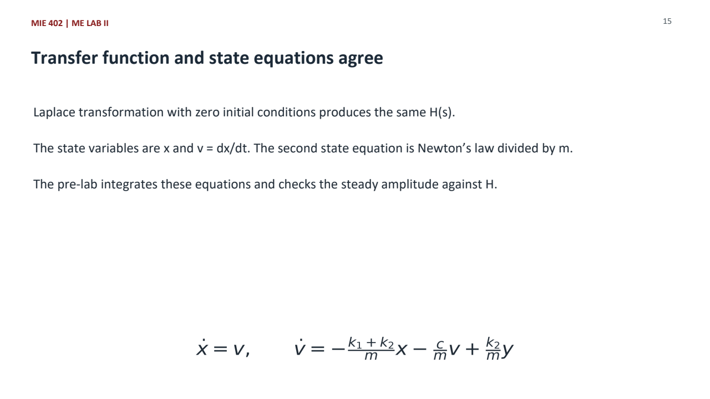
Explanation
Laplace transformation with zero initial conditions produces the same H(s).
The state variables are x and v = dx/dt. The second state equation is Newton’s law divided by m.
The pre-lab integrates these equations and checks the steady amplitude against H.
29–31 min. H(s)=k2/(m s²+c s+k1+k2). Define s as the Laplace variable, units 1/s. The force-input version in last year’s prelab has numerator 1; it describes X/F in m/N. Multiplying by k2 converts driven-end displacement to effective force and gives X/Y, dimensionless. No Control System Toolbox is needed for the supplied numerical simulation.
16. Measure input travel and motor speed
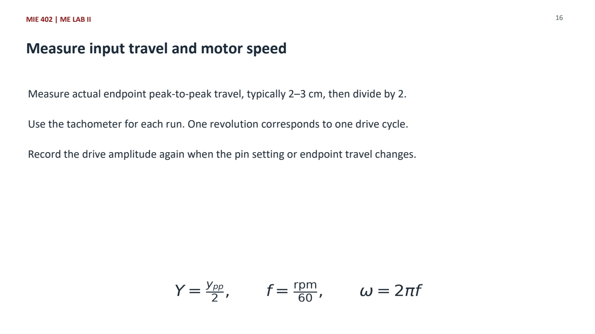
Explanation
Measure actual endpoint peak-to-peak travel, typically 2–3 cm, then divide by 2.
Use the tachometer for each run. One revolution corresponds to one drive cycle.
Record the drive amplitude again when the pin setting or endpoint travel changes.
31–33 min. Example: ypp=0.024 m gives Y=0.012 m. A 72 rpm setting gives 1.2 Hz and 7.54 rad/s. For direct-hook calibration stop the motor before changing the linkage, retain the opposing spring and ask the GTA to check travel. Do not confuse input travel with cart output travel.
17. A useful sweep covers both sides of resonance
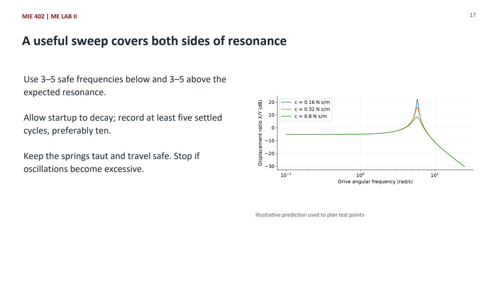
Explanation
Use 3–5 safe frequencies below and 3–5 above the expected resonance.
Allow startup to decay; record at least five settled cycles, preferably ten.
Keep the springs taut and travel safe. Stop if oscillations become excessive.
33–35 min. The handout supply range is 2–11 V; ask the GTA to supervise near resonance. At least five measured points are a before-leaving quick check, not an instruction to skip the rest of the sweep. Do not interpolate across resonance and present the result as measured data.
18. Fit amplitude at the measured drive frequency
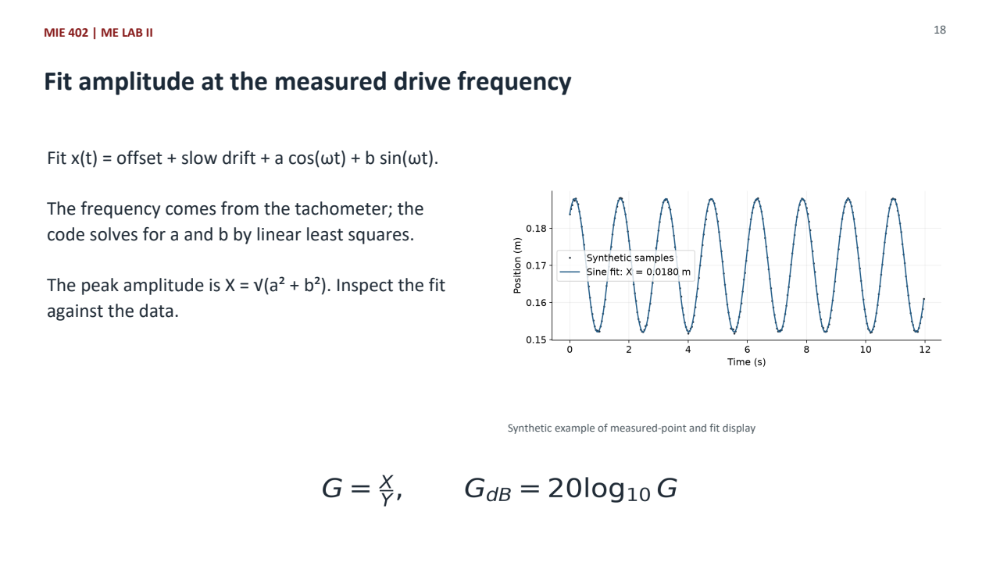
Explanation
Fit x(t) = offset + slow drift + a cos(ωt) + b sin(ωt).
The frequency comes from the tachometer; the code solves for a and b by linear least squares.
The peak amplitude is X = √(a² + b²). Inspect the fit against the data.
35–37 min. Define a and b as fitted displacement coefficients [m], G as dimensionless amplitude ratio, and GdB as its decibel value. This avoids a nonlinear sine-fit convergence failure. A trend term captures modest offset drift but does not establish steady state: compare amplitudes in both halves and inspect residuals.
19. Choose damping for the tested configuration
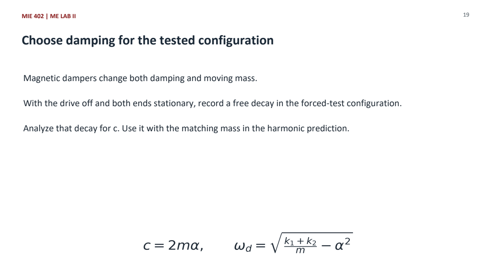
Explanation
Magnetic dampers change both damping and moving mass.
With the drive off and both ends stationary, record a free decay in the forced-test configuration.
Analyze that decay for c. Use it with the matching mass in the harmonic prediction.
37–39 min. This is system identification, not an independently known damping constant. Report that c was obtained from free decay. The no-magnet impulse runs cannot supply c for a cart with added magnets. Reuse Lab 4 c only if mass, springs and damper configuration truly match.
20. MATLAB workflow
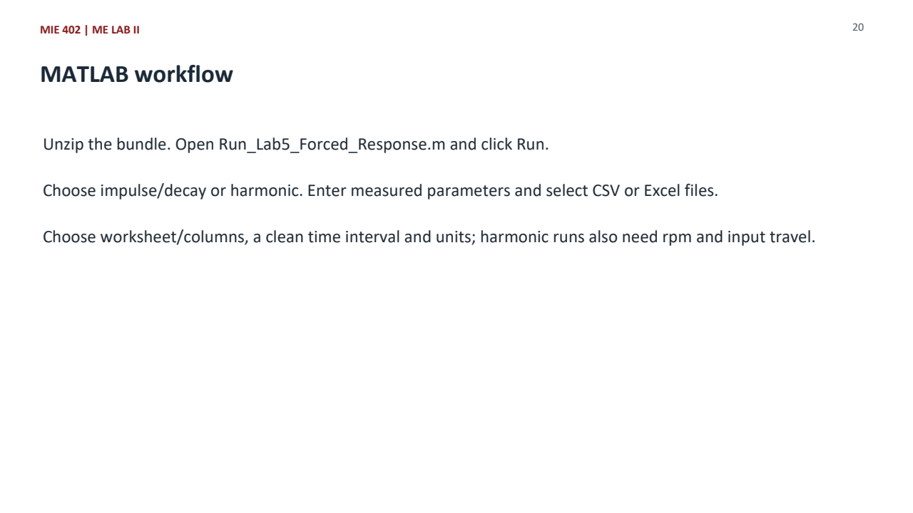
Explanation
Unzip the bundle. Open Run_Lab5_Forced_Response.m and click Run.
Choose impulse/decay or harmonic. Enter measured parameters and select CSV or Excel files.
Choose worksheet/columns, a clean time interval and units; harmonic runs also need rpm and input travel.
39–42 min. Helpers must stay in the same folder. The launcher takes no input arguments. No extra preliminary figure is created. Students read time boundaries from the original Vernier record. Results are saved beside data in Lab5_Results; the script prints the exact path.
21. Figures for the combined Labs 4 + 5 report
Explanation
Three impulse time histories and spectra: compare frequency and amplitude.
Representative harmonic record: identify startup and the settled interval.
Measured displacement ratios overlaid on theory using your measured parameters.
42–45 min. Use an Abstract, Introduction, Methods, Results, Discussion and Conclusion following the course template. Keep free and forced results distinct, then connect them in discussion. Include a short parameter/results table and export figures, not screenshots. The theoretical line must not be passed off as experimental data.
22. Check before leaving the laboratory
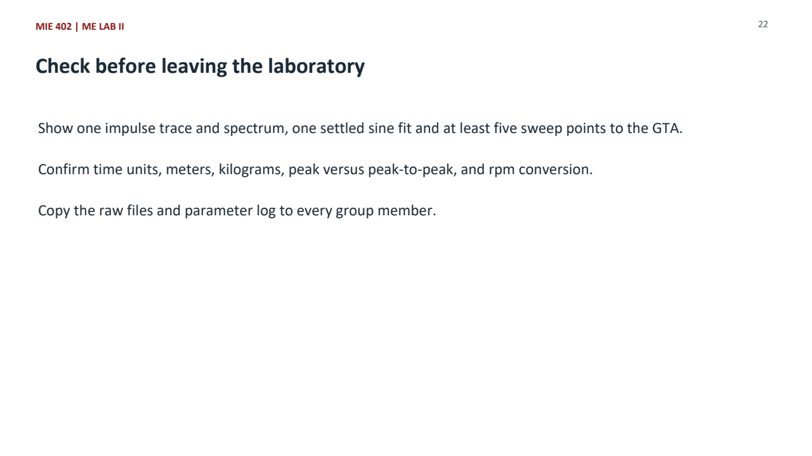
Explanation
Show one impulse trace and spectrum, one settled sine fit and at least five sweep points to the GTA.
Confirm time units, meters, kilograms, peak versus peak-to-peak, and rpm conversion.
Copy the raw files and parameter log to every group member.
45–48 min. Data-quality check: an amplitude change greater than 10% between halves flags possible unsettled behavior; inspect rather than accepting automatically. Explain friction, slack or changing motor speed when theory disagrees. A frequency-response peak does not imply an unstable linear system if c remains positive.
23. Three frequencies to distinguish
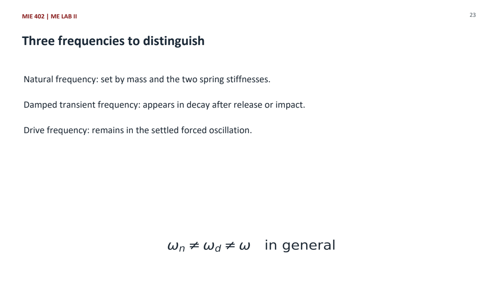
Explanation
Natural frequency: set by mass and the two spring stiffnesses.
Damped transient frequency: appears in decay after release or impact.
Drive frequency: remains in the settled forced oscillation.
48–50 min. Ask: if motor speed changes and mass/springs do not, which frequency changes? Which motion disappears with time? Then ask what parameter is missing if students did not measure input travel: they cannot calculate X/Y. Sources for this lecture: prior MIE 402 Lab 5 manual and theory/experiment notes, plus Newton’s law derivations shown here. All generated model figures are labeled illustrative.